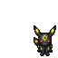
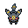
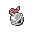
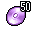

Pokédex / #197
Umbreon #197
Dark
When darkness falls, the rings on the body begin to glow, striking fear in the hearts of anyone nearby.
Generation 2 · Johto

Stats
| Attack | 65 | |
|---|---|---|
| Defense | 110 | |
| Sp. Atk | 60 | |
| Sp. Def | 130 |
In the wild
| Wild level | 85–95 |
|---|---|
| HP | 95 |
| Experience | 15 |
| Egg groups | Field |
Evolution
- Evolves from Eevee at level 30, with a Soothe Bell, during the night.
Moves
| Level | Move | Type | Category | Power | Energy | Cooldown | Effect | |
|---|---|---|---|---|---|---|---|---|
| 1 | Tackle | Normal | Physical | 15 | 15 | 1s | Tackle is one of the most common and basic moves a Pokemon learns. It deals damage with no additional effects. | |
| 5 | Quick Attack | Normal | Physical | 40 | 40 | 6s | Quick Attack deals damage and has no secondary effect. | |
| 10 | Sand-Attack | Ground | Status | – | 25 | 10s | Sand-Attack lowers the target's Accuracy by one stage. | |
| 15 | Pursuit | Dark | Physical | 40 | 40 | 6s | Pursuit deals damage and has no secondary effect. | |
| 20 | Faint Attack | Dark | Physical | 60 | 60 | 9s | Faint Attack deals damage and ignores changes to the Accuracy and Evasion stats. | |
| 25 | Bite | Dark | Physical | 60 | 60 | 9s | Bite deals damage and has a 30% chance of causing the target to flinch. | |
| 35 | Moonlight | Fairy | Status | – | 120 | 120s | Moonlight restores the user's current HP based on the weather conditions and time of day. Normal conditions will restore ½ of the total HP. | |
| 40 | Assurance | Dark | Physical | 60 | 70 | 13s | Assurance does damage and has no secondary effect. | |
| 45 | Confuse Ray | Ghost | Status | – | 50 | 9s | Confuse Ray causes the target to become confused. | |
| 50 | Dark Pulse | Dark | Special | 8 | 95 | 18s | Dark Pulse deals damage and has a 20% chance of causing the target to flinch. | |
| 55 | Hyper Voice | Normal | Special | 90 | 100 | 21s | Hyper Voice inflicts damage and has no secondary effect. | |
| 60 | Iron Tail | Steel | Physical | 100 | 100 | 15s | Iron Tail inflicts damage and has a 10% chance of lowering the target's Defense stat by one stage. | |
| 65 | Foul Play | Dark | Physical | 95 | 105 | 20s | The user turns the target's power against it. The higher the target's Attack stat, the greater the move's power. | |
| 70 | Last Resort | Normal | Physical | 140 | 140 | 30s | Last Resort does damage and has no secondary effect. |
Field abilities
DigFindFlashCutHeadbutt
Special abilities
Synchronize
Egg moves
CaptivateCharmCovetCurseDetectEndureFake TearsFlailNatural GiftStored PowerSynchronoiseTickleWishYawn
Technical machines
BideDouble EdgeDouble TeamDream EaterHeadbuttHyper BeamIron TailMimicMud SlapNightmarePsychicRageRain DanceRestShadow BallSoftboiledSubstituteSwiftTauntToxicZap Cannon
Drops
| Item | Amount | Chance | |
|---|---|---|---|
| black orb | 1 | 85.7% | |
| night orb | 1 | 28.6% | |
| shadow orb | 1 | 17.1% | |
| cutting fang | 1 | 17.1% | |
| dark claws | 1 | 14.3% | |
| dark crystal | 1 | 8.57% | |
| luminous orb | 1 | 8.57% | |
| onigiri | 1–5 | 5% | |
| Dread Plate | 1 | 0.1% | |
 | umbreon doll | 1 | 0.1% |
 | Soothe Bell | 1 | 0.02% |
 | TM 50 | 1 | 0.01% |
| TM 57 | 1 | 0.01% |